Create Route

Route Concepts
Understanding how OpenCPN handles waypoints, routes, and route points will help you manage those objects efficiently.
- A route is a set of two or more points you want to visit in a given order.
- Route points may be defined automatically as the route is created or a route may link existing waypoints or route points.
- A waypoint is an independently defined point while a route point exists only as part of a route definition.
- Multiple routes may share common route points.
- When all the routes which pass through a shared route point are deleted that route point will be deleted.
- When all the routes which share a waypoint are deleted the waypoint will persist independently.
Create A Route
Press the  button or use the short cut “Ctrl-R” to start the creation of a route. “Esc” ends the route. The cursor changes to a pencil (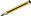). Left click to create sequential numbered route points. The numbers will not be visible, but are available in the Route Properties Dialog, accessible through the right click menu or the Route Manager. The running total distance of the whole route will be shown along the “pencil” together with the course and distance from the last marked route point. When creating routes, OpenCPN will ask if it should use a nearby mark, when a route point is added that is close to an already existing mark.
button or use the short cut “Ctrl-R” to start the creation of a route. “Esc” ends the route. The cursor changes to a pencil (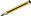). Left click to create sequential numbered route points. The numbers will not be visible, but are available in the Route Properties Dialog, accessible through the right click menu or the Route Manager. The running total distance of the whole route will be shown along the “pencil” together with the course and distance from the last marked route point. When creating routes, OpenCPN will ask if it should use a nearby mark, when a route point is added that is close to an already existing mark.

If you click “Yes”, the existing mark is copied to the route.
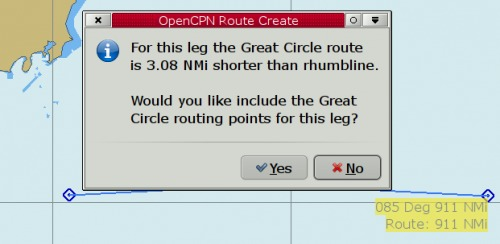
For longer distances, especially on east-west courses in higher latitudes, the Create Route tool seamlessly switches to also offer a Great Circle alternative to Mercator rhumb-line route legs.
Read more Great-circle Sailing.
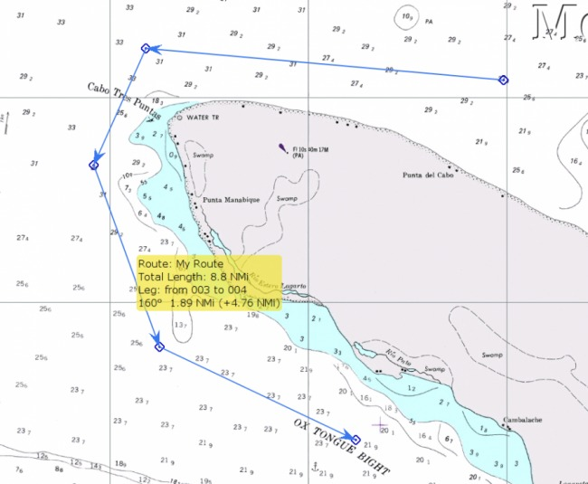
Hovering the cursor over the route brings up a yellow roll-over rectangle. It shows the name of the route (if it is set in the properties dialog), the total length of the route, the course and distance for the leg under the cursor and distance run so far along the route to the first waypoint in the current leg. Looking at the four legged route above. The total distance is 8.8 NMi. The third leg is 1.89 NMi in true direction 160° and the accumulated distance in the first two legs is 4.76 NMi.
If your desired route extends off the currently displayed chart, move the route cursor in the desired direction and the display will automatically pan to show the area. You can zoom in and out with the mouse scroll wheel or keyboard +/- keys during route creating. You can also right click and select 'MAX DETAIL HERE' or 'Scale Out' during route creation. When finished right click and choose end route from the context menu or press the “Esc” key.
The new route will be shown in blue to indicate it is an Inactive Route. Active routes are red.
Right-clicking on a Route brings up a focused menu
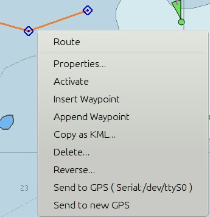
To Activate the Route, select Activate.
To prevent deleting a route by mistake, a confirmation dialog is activated when pressing Delete from the popup menu, if the box Confirm deletion of tracks and routes is ticked in Options > User Interface. If a Waypoint is deleted, the right click menu will have “Undo Delete Waypoint” in the right click menu, with a hotkey Ctrl + Z.
Modify a Route
To modify, add to, insert waypoints, remove or delete waypoints in a Route, Right Click on the Route Segment or at the Waypoint dependent on intent, and select the appropriate command.
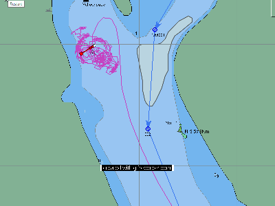
Insert a Waypoint into a Route.(Click on the image to activate the gif recording) or Append a waypoint to the end.
Right clicking on a Waypoint in a route brings up a few options, otherwise not available.
* 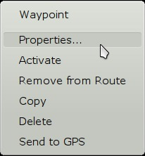
- Properties. The dialog is the same as for an individual mark.
- Activate - Gives the direction to the chosen waypoint instead of the first waypoint in the route, which is the default. Useful when joining, for example, an imported route, at an arbitrary waypoint.
- Remove from Route, but don't delete it.
- Copy as kml, for use with Qtvlm or Google Earth.
- Delete Waypoint from Route.
- Send to GPS is seen in the rightclick menus for routes and waypoints. If a port is not selected, the case in the picture above, a dialog is shown to select an output port. To change the selected port, go to the route manager and select “Send to GPS”.
- Ctrl + N, a shortcut that activates the next waypoint in an active route.
Multiple Routes
In OpenCPN multiple routes can be handled in a couple of different ways. Many routes can be created in a session or imported into a session.
The visibility of every route is controlled in the Route Manager. There is an “eye” to the far left on the line for each route. This works as a toggle switch. A plain Eye means that the route is visible, while an eye with a red cross means that it's hidden. This allows you to show only the routes of current interest.
Another way is to create and export routes, and later import them when needed. To keep the chart clear of useful, but not currently needed, routes follow these steps:
- Create a folder called, 'GPX_Routes', or another suitable name.
- Create your route.
- Use the Route Manager to export the route with a descriptive file name and save it in GPX_Routes.
- Delete the route from the chart.
- Repeat for each new route.
- When needed, simply use the Route Managers “Import” Button to open the route file.
You can export any number of routes to one big file or export each route to a separate file.
When you import a route that uses shared waypoints those waypoints will be left on the chart when you delete the route. To get rid of the way points left on the chart when a route has been deleted follow these steps.
- Open the Route Managers Waypoint tab and press the “Delete All” button
- Say 'Yes' to: 'Are you sure you want to delete <ALL> waypoints?'
Exporting and Importing Routes and Marks
To learn how to export and import routes, waypoints, tracks, and layers read the Route & Mark Manager section of the manual. To open the Route & Mark Manager click the  button.
button.
Activating Routes and Active Route Console
Right clicking on the Route, changes the color from blue to orange and brings up a comprehensive menu. Clicking “Activate Route” or performing the same action through the Route Manager changes the route color to red and a new route information window appears on the right side of the display. This Active Route Console displays data particular to the Active Leg (XTE, Bearing, VMG, RNG & TTG) or the Active Full Route.
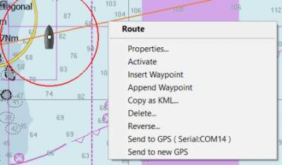
Right click on a an Active Route, brings up a menu with a choice for “Deactivate”.
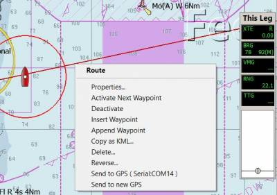
Right click on a an Active Route, brings up a menu with a choice for “Activate next waypoint”.
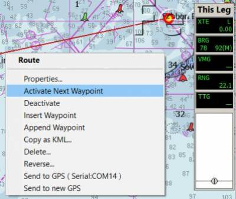
Zero XTE only shows in the right click menu if there is a cross track error. When selected it resets the present XTE (Cross Track Error) back to zero. “Zero XTE” is useful if you are offset from the route and want the autopilot to follow a direct course adjusted for your current position, rather than the position of the last route waypoint.
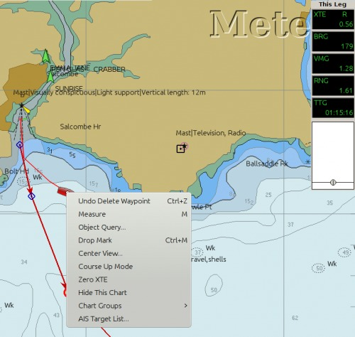
Active Route Console Window
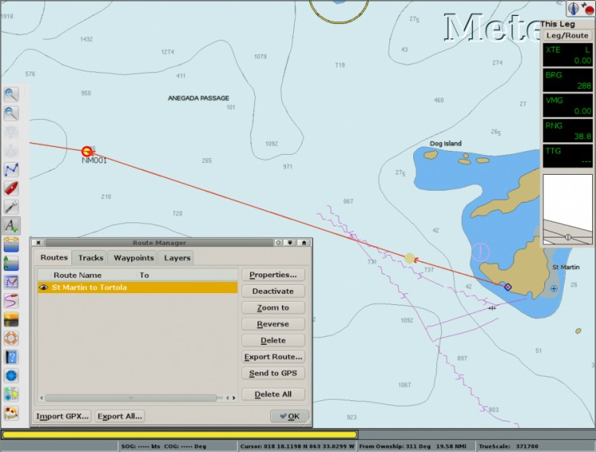
The Active Route Console Window (upper right black box) appears in the screen when a Route is set to Active by selection of Activate from the Route Right Click menu.
To change the Font Sizes in the Active Route Console Window go to Options > User Interface > Fonts and pick “Console Legend” and “Console Value” and change the values.
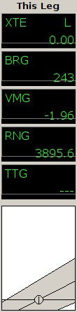
XTE Cross Track Error. How far off course your boat is. “L”=left, “R”=right
BRG Direction to next waypoint.
VMG Velocity made good to next waypoint
RNG Distance to next waypoint.
TTG Time To Go to next waypoint.
Showing Active Leg & Active Full Route Data
Right clicking at the top title “This Leg” of the Black Active Route Console Window above, brings up this dialog:
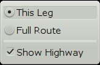
Select the “Current Leg” or the “Full Route” Active Route Console. There is an option to Show or Hide the “Highway”.
Route to Autopilot
For sending a Route to an Autopilot several settings and conditions must be met.
Read more in Sending an Active Route to the Autopilot“ in Options > Data Connections (at the bottom) for more information about connections and testing.
Note that a Connections Output Port must be configured to send ECRMB, ECRMC and ECAPB NMEA sentences to the Auto Pilot.
Also read about Route to Autopilot in Advanced Features for more details.
Under Options Settings > Ship > Own Ship See:
- Advance route waypoint on arrival only
- Waypoint Advance (normal default)
Route Handling Techniques
Any navigation object you create is saved by OpenCPN until you delete it. Having a lot of navigation objects makes for a cluttered chart display and slows down the program.
- Export unused objects to GPX files and delete them from OpenCPN.
- You can import them later when you need them.
- Create a separate GPX file for each object so you can import only the ones you need.
Create routes for one-time use
- Don't refer to saved waypoints,
- Don't upload the route to a GPS,
- Delete the route when you reach the end point
Route management is pretty simple.
Create routes for future use
If you want to save routes for future use, and want to build on a library of waypoints, and will upload routes to a GPS or chart plotter life will be simpler if you work out a strategy for naming navigational objects and computer files.
Here's a strategy for your consideration.
- Build routes in short segments that don't duplicate other routes.
- Routes should not share non-end points with other routes.
- Route points should have meaningful, unique names related to the route name.
- Routes should be exported to individual GPX files so they can be called up individually.
Example
You have a home port on Little River with a channel that leads to open water. You like to visit Clear Cove and Muddy Harbor, each of which has a channel leading from open water to the final destination.
- Create a route from LR1 to your dock. Edit the route to name the route points LR1, LR2, LR3, … Dock. If you make the names correspond to the numbered channel markers where you need to make turns it will be easier to recognize the physical aids to navigation the route points represent. Name the route LR1-DOCK. Export the route to a GPX file (LR1-DOCK.gpx).
- Create a route from CC1 to the Clear Cove anchorage. Rename the route points CC1, CC2, CC3, … CCn (where “n” represents the number of the last point). Name the route CC1-CCn and export it to CC1-CCn.gpx.
- Create a route from MH1 to the Muddy Harbor dock. Rename the route points MH1, MH2, MH3, … MHn (or MHDOCK). Name the route MH1-MHn and export it to MH1-MHn.gpx.
- Create three more routes, one from LR1 to CC1, one from LR1 to MH1, and one from CC1 to MH1. In each case, click on the existing route point and select “Yes” in response to “Use nearby waypoint?” Those routes may be straight lines with just a beginning and end point or they may be more complicated to take you around obstructions. Any obstructions should be identified with waypoints given meaningful, unique names. Again, each route should be saved to its own GPX file.
Use of the GPX Routes
When you want to cruise from your home dock to the Clear Cove anchorage, import the LR1-DOCK.gpx file, the LR1-CC1.gpx file, and the CC1-CCn.gpx file. Since the LR1-DOCK route goes in the wrong direction you want to reverse the route. OpenCPN will offer to rename intermediate waypoint for you. Don't. Remember, your numbers correspond to channel markers whose designations don't change when you traverse the channel in a different direction.
Advantages
- Because your waypoint and route point names are unique you don't have to worry that importing one route will damage another.
- You can also upload these routes to your GPS without worrying about duplicate waypoint names.
- Most GPS receivers build routes on waypoints. They don't have the idea of route points that are not in the waypoint list.
- You need your route point names to be unique so that uploading one route doesn't invalidate a route that was previously uploaded.
OpenCPN Operation
- OpenCPN doesn't care about duplicate route or waypoint names.
- When you create a route by clicking on points on the chart it names each route point with a number beginning with 001.
- If you create a second route which joins the first and you “use nearby waypoint” to join the original route you can end up with route points named 001, 002, 003, 004, 002.
- OpenCPN knows the two 002 points are different because they have different coordinates and different “guids”.
- Your GPS receiver isn't that sophisticated and it will confuse the two.
Read Route & Mark Manager for more information on exporting routes to GPX files and importing routes from GPX files.